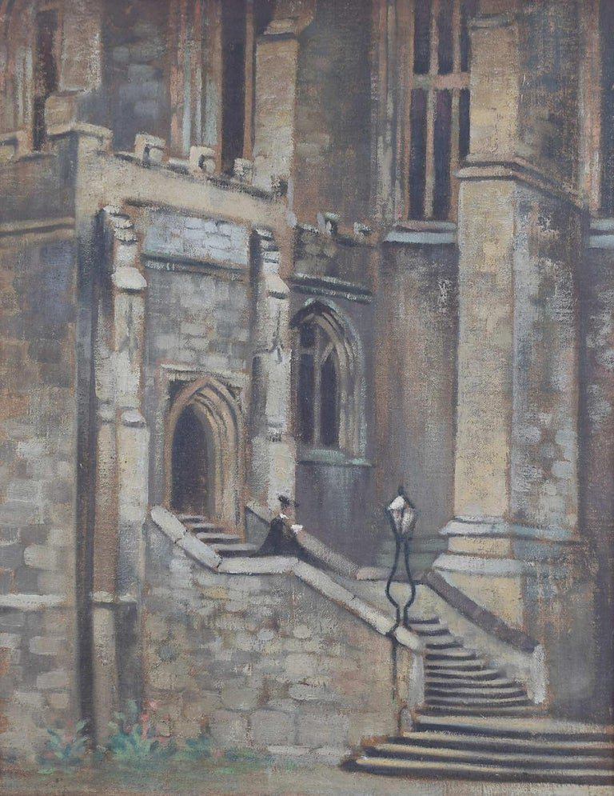

Méthodologie · Anglais
Exam Skills
Comprendre une consigne, choisir une preuve, construire une réponse, faire entendre sa pensée : préparer un examen d’anglais, ce n’est pas apprendre un discours à réciter.

Pour chaque examen : le format officiel et ses critères, ce qu’il faut maîtriser, une méthode courte en spirale de Gorse, puis les ressources pour s’entraîner. Les règles sont celles des sessions 2026 et 2027 ; les changements de 2027 sont signalés.
Brevet (DNB)
Comment montrer que l’on comprend un document sans traduire chaque mot ? Au brevet, il faut d’abord savoir dans quelle situation on se trouve : candidat scolaire ou candidat individuel.
Le format officiel
Candidats scolaires. Pas d’épreuve terminale d’anglais. La moyenne annuelle d’anglais de troisième entre dans le contrôle continu, qui compte pour 40 % du résultat ; les épreuves terminales comptent pour 60 %. L’ancien calcul sur 800 points ne s’applique plus depuis la session 2026.
Oral de soutenance. Le candidat peut présenter une partie de son projet en anglais, si la langue est enseignée dans l’établissement : cinq minutes au plus, exposé et entretien compris. Ce n’est pas une épreuve d’anglais : le jury valorise cette partie quand la langue est bien maîtrisée.
Candidats individuels. Une épreuve écrite de langue vivante :
| Élément | Définition |
|---|---|
| Durée | 1 h 30 |
| Coefficient | 2 |
| Compréhension de l’écrit | Texte de 200 mots au plus ; compréhension globale et détaillée ; 10 points |
| Expression écrite | Texte de 50 à 80 mots environ, en lien avec le thème du document ; 10 points |
Niveaux. En fin de troisième, en première langue : au moins A2 dans les cinq activités langagières, et B1 visé dans plusieurs d’entre elles. B1 partout n’est pas une condition d’obtention du brevet. À partir de 2027, les sujets portent sur le programme de troisième s’il est en vigueur, sinon sur celui du cycle 4 : le nouveau programme d’anglais ne s’appliquera en troisième qu’à la rentrée 2028.
Ce qu’il faut maîtriser
- Identifier la situation : qui parle ou écrit, à qui, où, quand, dans quel but.
- Distinguer le sujet général d’un détail : une date ou un nom ne suffit pas à expliquer un texte.
- Justifier une réponse par un indice précis, sans recopier un passage qui ne répond pas.
- Produire le message demandé : courriel, récit bref, présentation, avis.
- Organiser un écrit court : une entrée, des informations reliées, une clôture.
- Se relire : le sens, les personnes, les temps, les accords.
Côté langue : le présent simple pour une habitude, le prétérit pour un événement, can pour une capacité, be going to pour une intention, because, but, first, then, finally pour relier ; à l’oral, des nombres et des dates prononcés clairement.
La méthode : la spirale de Gorse
Entrer dans la situation. De quoi parle-t-on, et pourquoi cela peut-il me concerner ?
“This is about…” · “The situation matters because…”
Identifier. Qui agit, où, dans quelles circonstances ?
“The main character is…” · “The story takes place…”
Comprendre. Que veut cette personne, et qu’est-ce qui le montre ?
“He wants to…” · “We know this because…”
Répondre. Que me demande vraiment la consigne ?
“I would like to…” · “In my opinion…, because…”
La pointe. Que dois-je rendre, et comment vérifier que ma réponse remplit sa fonction ?
“My answer explains…” · “I have included…”
À la pointe. Je distingue une question de compréhension d’une tâche d’expression, et je sais pourquoi je choisis une information, une preuve, une formulation.
Les ressources
-
English Troisième, unité 6 : DNB
Reprendre les compétences de troisième et organiser les révisions, en distinguant le travail de l’année et l’écrit des candidats individuels.
-
GEREX, Brevet 8 : Chicago summer jobs
Lire un texte et écrire de 50 à 80 mots, dans le format de l’écrit des candidats individuels.
CAP et CAPA
Comment faire comprendre ce que l’on sait faire, puis répondre à quelqu’un qui ne suit pas un texte appris ? Le CAP et le CAPA travaillent cette autonomie, mais leurs épreuves ne sont pas les mêmes.
Le format officiel
CAP. Lorsque le règlement de la spécialité prévoit la langue vivante : coefficient 1, niveau A2, note sur 20. Cinq activités comptent chacune pour un cinquième : compréhension de l’oral, compréhension de l’écrit, expression écrite, expression orale en continu, interaction. Élèves des établissements publics ou privés sous contrat et apprentis des CFA habilités : CCF. Autres candidats : épreuve ponctuelle.
| Situation A (CCF, 1 h, sans préparation) | Contenu |
|---|---|
| Compréhension de l’oral, 10 min | Document audio ou vidéo d’une minute au plus, trois écoutes ; questionnaire à choix multiple en français |
| Compréhension de l’écrit, 25 min | Document authentique inconnu, dix lignes au plus ; réponses en français |
| Expression écrite, 25 min | Un sujet au choix entre deux (vie quotidienne ou vie professionnelle) ; 60 à 80 mots au moins |
Situation B (CCF, 6 min). Trois minutes de prise de parole en continu, puis trois minutes d’interaction. Le candidat présente un travail, un projet, un produit, un service ou une expérience professionnelle ; il peut s’aider d’un plan, de mots-clés, d’une image, mais ne lit pas un texte. Les deux situations ont lieu pendant la dernière année de formation, dans l’ordre que l’on veut.
CAP en ponctuel. Un écrit d’une heure et un oral de six minutes, dans le même cadre, séparés par une pause d’au moins quinze minutes.
CAPA (épreuve E3.1). La partie langue vivante est un jeu de rôle : une fiche de situation en français, une présentation du personnage et de la situation (deux minutes au plus), puis une interaction avec l’examinateur ; dix minutes au total, coefficient 0,5 au sein d’E3.1. Hors CCF, quinze minutes de préparation précèdent l’épreuve. Texte de référence : note de service DGER du 1er octobre 2025, applicable à partir de la session 2026. Elle ne fixe pas de niveau du CECRL ; A2 sert de repère pour les ressources ci-dessous.
Critères. Au CAP, la compréhension est appréciée selon son degré ; la production selon sa recevabilité et son intelligibilité. Au CAPA, on utilise la grille du jeu de rôle, pas celle du CAP.
Ce qu’il faut maîtriser
- Nommer les lieux, les outils, les produits, les personnes et les tâches utiles.
- Donner un horaire, un prix, une quantité, une durée.
- Présenter une journée de travail en phrases, pas en mots isolés.
- Expliquer une action passée et son résultat.
- Poser une question, répondre à une demande de précision, demander de répéter sans quitter l’échange.
- Adapter la politesse à la personne.
Côté langue : présent simple, prétérit, impératif ; can, must, mustn’t ; would like ; because, then, after that. À l’oral, les nombres, les horaires et les négations doivent s’entendre nettement.
La méthode : la spirale de Gorse
Entrer. À quoi sert l’anglais dans cette situation ?
“I need English to…”
Situer. Qui suis-je, où suis-je, à qui dois-je parler ?
“I work in…” · “I am speaking to…”
Expliquer. Qu’ai-je fait, ou que dois-je faire comprendre ?
“My main task is…” · “Yesterday, I…”
Interagir. Que dois-je demander, vérifier, préciser ?
“Could you repeat that, please?” · “Do you mean…?”
La pointe. Quel résultat mon message doit-il produire ?
“The customer needs…” · “To solve the problem, I can…”
À la pointe. Je ne récite plus une liste de tâches : je présente une expérience au CAP, je tiens mon rôle dans l’échange au CAPA.
Les ressources
-
Exam Toolkit CAP et CAPA : My Working Day
Construire la présentation d’une journée de travail et réemployer la langue au niveau A2.
-
Les actions, le lexique et les échanges du salon, pour la situation orale.
-
Anglais et français, du CAPa au BTSA
Des activités adaptées aux parcours agricoles, du CAPa au BTSA.
-
De courtes vidéos par métier pour comprendre des échanges professionnels et développer ses réponses.
Textes officiels : 6, 7, 8, 9, 10, 11.
Version prof. Format : note de service DGER/SDPFE/2026-58 du 4 février 2026. Niveau visé : B1+.
Rappel du format
- Situation A, écrite, 1 h 30 au plus (trois écoutes comprises) : CO (document sonore ou vidéo inconnu, 1 min 30 au plus, trois écoutes, pauses d'une minute au plus, compte rendu écrit en français) ; CE (texte authentique de 15 lignes au plus, compte rendu en français) ; EE (100 mots au moins, consigne en français). Lien thématique souhaité entre les trois parties, mais parties indépendantes.
- Situation B, orale, 10 minutes : 5 minutes de présentation d'un sujet au choix (thématiques de la classe, projets de PFMP, actions, mobilités), image et plan en mots clés autorisés, pas de lecture ; puis 5 minutes d'échange.
- Pondération : expression orale 40 %, CO 30 %, CE 20 %, EE 10 %.
Scénario du sujet : Farm shops in Britain: from the field to the customer. Domaine de la vie professionnelle (vente directe, production) et domaine de la vie personnelle, sociale et culturelle (habitudes de consommation).
Situation A blanche (90 minutes, ou deux lessons)
| Minutes | Étape | Activité |
|---|---|---|
| 0 à 3 | Distribution du sujet complet, titre du document sonore annoncé | Lecture |
| 3 à 10 | Trois écoutes (1 min 30 au plus chacune), une minute de pause entre les écoutes, prise de notes | CO |
| 10 à 30 | Compte rendu en français de la CO | CO |
| 30 à 55 | Compte rendu en français du texte | CE |
| 55 à 85 | Expression écrite, 100 mots au moins | EE |
| 85 à 90 | Relecture, ramassage |
En deux lessons de 52 minutes : lesson 1, CO puis CE (minutes 0 à 52) ; lesson 2, EE (35 minutes), puis 15 minutes de correction collective de la CO, 2 minutes de ramassage.
Compréhension de l'oral
Document à choisir : une vidéo authentique de 1 min 30 au plus sur une ferme qui vend en direct (par exemple un reportage de BBC Countryfile ou une vidéo de la National Farmers' Union, libre accès). Exclure les enregistrements de manuels et les textes lus.
Consigne : « Vous allez entendre trois fois le document intitulé [titre]. Rendez compte en français de ce que vous avez compris : nature du document, thème, personnes, lieux, informations précises, points de vue. »
Compréhension de l'écrit
Texte d'entraînement (le jour de l'ECCF, prendre un texte authentique de 15 lignes au plus) :
More and more farms in Britain open a small shop on their land. Customers can buy eggs, meat, vegetables, cheese or honey produced on the farm or nearby. For farmers, it is a way to earn more: when they sell to a supermarket, they get only a small part of the final price. In a farm shop, they set their own prices. Customers like to know where their food comes from, and many of them say that it tastes better. But a farm shop is a lot of work: someone must serve customers every day, follow hygiene rules and keep the accounts. Some farms have found a solution: a self-service shed with an honesty box, where customers pay by card or leave the money.
Source : texte d'entraînement écrit pour la classe à partir d'informations publiées par la National Farmers' Union et la Farm Retail Association.
Consigne : « Rendez compte en français du texte : de quoi parle-t-il, quels avantages et quelles difficultés présente-t-il, quelle solution est proposée ? »
Expression écrite (consigne en français, 100 mots au moins)
Choisissez un sujet.
- Sujet 1 : Vous effectuez votre PFMP dans une exploitation qui vend en direct. Un groupe de touristes britanniques veut visiter la ferme. Écrivez-leur un courriel en anglais pour présenter l'exploitation, les produits et les horaires de la boutique.
- Sujet 2 : Un ami anglais vous demande si vous faites vos courses au supermarché ou chez les producteurs. Répondez-lui en anglais en expliquant vos habitudes et votre avis.
Situation B blanche (10 minutes par élève)
| Minutes | Étape | Ce que font les élèves | Activité |
|---|---|---|---|
| 0 à 4 | Installation | Ordre de passage ; les autres élèves préparent leur propre fiche en mots clés. | Lecture |
| 4 à 15 | Passage 1 | 5 min de présentation sans lecture, 5 min d'échange, 1 min de notation. | EOC, EOI |
| 15 à 26 | Passage 2 | Même déroulé. | EOC, EOI |
| 26 à 37 | Passage 3 | Même déroulé. | EOC, EOI |
| 37 à 48 | Passage 4 | Même déroulé. | EOC, EOI |
| 48 à 52 | Bilan | Deux conseils collectifs. | |
| 52 à 55 | Marge | Rangement, sortie de la salle. La lesson dure 55 minutes, minutée sur 52. |
Sujets possibles (au choix de l'élève) : mon exploitation de PFMP ; une tâche que j'ai réalisée (soins aux animaux, taille, vente, transformation) ; une mobilité ou un voyage d'étude ; une thématique de la classe (fêtes rurales, alimentation, environnement). Questions d'échange : What was your role? What did you find difficult? What would you change? Would you like to work abroad? Why do you think customers buy local produce?
Grilles (version prof)
Oral : grille de l'annexe 4 (C3.3), sur 20
| Niveau | Expression en continu (/6) | Interaction (/6) | Recevabilité et intelligibilité de la langue (/8) |
|---|---|---|---|
| B1+ | 6 : discours argumenté, informé, point de vue pertinent | 6 : prend activement part, rebondit, justifie | 6 à 8 : langue correcte, fluide, proche de l'authenticité |
| B1 | 5 : discours articulé et nuancé, globalement pertinent | 5 : prend part, se reprend et reformule | 4 à 5 : langue globalement correcte, vocabulaire approprié, rares erreurs |
| A2 | 4 : discours simple et bref | 4 : prend part avec hésitations et redites | 2 à 3 : langue compréhensible, quelques erreurs |
| A1 | 2 à 3 : mots isolés, idées simples, discours superficiel | 2 à 3 : intervient simplement, répétitions, questions sans réponse | 1 : langue globalement compréhensible, vocabulaire limité |
| <A1 | 0 à 1 : amorce de discours, éléments isolés | 0 à 1 : n'intervient pas ou très peu | 0 à 1 : très partiellement compréhensible |
Grille de synthèse (annexe 9)
| Activité | Note sur 20 (points entiers) | Coefficient | Points |
|---|---|---|---|
| Expression orale (continu et interaction) | /20 (grille ci-dessus) | × 4 | /80 |
| Compréhension de l'oral | /20 | × 3 | /60 |
| Compréhension de l'écrit | /20 | × 2 | /40 |
| Expression écrite | /20 | × 1 | /20 |
| Total | /200, divisé par 10 = note C3.3 sur 20 |
Niveau CECRL : <A1 1 à 3 ; A1 4 à 7 ; A2 8 à 11 ; B1 12 à 15 ; B1+ 16 à 20 (indiquer B2 ou C1 si le niveau est supérieur). Arrondi : au point inférieur jusqu'à 0,49, au point supérieur à partir de 0,50.
Repères de classe pour la CO et la CE (sur 20) : 1 à 3, quelques mots isolés ; 4 à 7, le thème et quelques informations ; 8 à 11, les informations principales ; 12 à 15, les informations principales et des détails, la situation de communication ; 16 à 20, l'essentiel, les détails et les points de vue. Repères pour l'EE (sur 20, en trois sous-parties comme l'oral) : réalisation de la tâche et situation de communication /6 ; cohérence /6 ; correction de la langue /8.
L'élève ne peut pas venir en classe ou est hospitalisé
L'épreuve blanche peut se faire à la maison ou à l'hôpital, sans aide, en respectant la durée. L'élève note l'heure de début et de fin. Le document audio est déposé sur l'ENT ; l'élève l'écoute trois fois, avec une minute de pause entre les écoutes, sans revenir en arrière. L'oral se fait par enregistrement (présentation), puis par un échange au téléphone ou en visioconférence avec l'enseignante, ou à défaut par trois questions écrites envoyées après l'enregistrement. Version courte (fatigue) : une seule partie de l'écrit et la présentation orale.
Bac professionnel
Comment passer d’une expérience vécue à une parole personnelle, précise et organisée ? L’oral compte, mais il ne remplace ni la compréhension ni l’écriture : les cinq activités langagières sont évaluées.
Le format officiel
Niveaux et coefficient. B1+ en LVA, A2+ en LVB. Coefficient 2 par langue en général (3 pour la langue A en commercialisation et services en restauration) : vérifier le règlement de sa spécialité. Note sur 20, chaque activité langagière pour un cinquième. Élèves des établissements publics ou privés sous contrat et apprentis des CFA habilités : CCF ; autres candidats : épreuve ponctuelle.
| Situation A (CCF, écrit d’1 h) | Contenu |
|---|---|
| Compréhension de l’oral | Document audio ou vidéo d’une minute trente au plus, trois écoutes ; compte rendu en français |
| Compréhension de l’écrit | Document authentique inconnu, quinze lignes au plus ; compte rendu en français |
| Expression écrite | Un sujet au choix entre deux, en anglais (vie quotidienne ou vie professionnelle) ; 100 à 120 mots au moins |
Situation B (CCF, oral de 10 min). Cinq minutes au plus de présentation en continu, puis cinq minutes au plus d’entretien. La présentation porte sur un travail, un projet, un produit, un service ou une expérience professionnelle ; l’entretien demande explications, précisions et exemples. On prépare un propos que l’on comprend et que l’on peut développer, pas une récitation.
Épreuve ponctuelle. Une partie écrite d’une heure et une partie orale de dix minutes, mêmes activités, mêmes niveaux.
Critères. Les grilles nationales, distinctes pour la LVA et la LVB, apprécient le degré de compréhension, la pertinence et l’organisation des productions, l’intelligibilité, la langue et la capacité à interagir. À partir de 2027, la qualité de la langue est surveillée dans tous les examens, sans changement des situations A et B.
Ce qu’il faut maîtriser
- Comprendre une situation de communication et en restituer l’essentiel en français.
- Distinguer les faits, les intentions et les réactions des personnes.
- Rédiger une réponse adaptée au genre demandé et au destinataire.
- Présenter une expérience : le contexte, sa responsabilité, les actions, le résultat.
- Développer ses réponses pendant l’entretien, au-delà de « yes » ou « no ».
- Expliquer une difficulté et proposer une solution.
- Justifier un choix et, en LVA, nuancer un jugement.
Côté langue : le lexique du métier, les marqueurs de chronologie, le prétérit et le present perfect, les comparatifs, les modaux, les relatives, les connecteurs de cause, de conséquence et d’opposition, les formules pour reformuler ou demander une précision. À l’oral : l’accent sur les mots importants et les terminaisons prononcées.
La méthode : la spirale de Gorse
Ouvrir. Qu’est-ce qui rend une expérience digne d’être racontée ?
“This experience was important because…”
Situer. Dans quel contexte ai-je agi, avec quelle responsabilité ?
“I was responsible for…”
Expliquer. Qu’ai-je fait, comment, et pourquoi ?
“First, I…” · “I chose to…, because…”
Examiner. Quelle difficulté ai-je rencontrée, qu’ai-je appris ?
“The main difficulty was…” · “I realised that…”
Dialoguer. Quelles questions peut-on me poser ?
“What I mean is…” · “For example…”
La pointe. Comment montrer une compétence plutôt que réciter une expérience ?
“This shows that I can…” · “If I faced this again, I would…”
À la pointe. Je choisis des faits utiles, je les organise, je les explique, et j’adapte ma réponse quand une question m’oblige à préciser.
Les ressources
-
Préparer et répéter la présentation orale et l’entretien.
-
Une prononciation qui fait entendre les mots importants, pour la situation B.
-
English Exam Guide : situations A et B (CCF)
Les tâches de chaque situation et l’organisation de la préparation.
-
English Exam Practice : situations A et B
S’entraîner à relier compréhension, écriture et oral.
-
Expanding your vocabulary : bac pro
Enrichir ses formulations et les réemployer dans des réponses complètes.
-
Organiser une réponse argumentée lorsque le sujet d’expression écrite s’y prête.
-
Des entraînements complémentaires en réception et en production.
Textes officiels : 11, 12, 13, 14, 3.
Pour la Terminale (blanc certificatif dans le format) et la Première (entraînement). Version prof : ne pas publier en version élève, sauf la partie « L'élève ne peut pas venir en classe ou est hospitalisé ».
Thème du sujet : Working in a team, at home and abroad.
Rappel du format officiel (arrêté du 17 juin 2020, annexe V ; épreuve de langue vivante, bac pro, coefficient 2) :
- Situation A, écrite, 1 heure au plus, en dernière année de formation : compréhension de l'oral (document de 1 min 30 au plus, entendu trois fois, une minute entre les écoutes, compte rendu en français) ; compréhension de l'écrit (document authentique inconnu de 15 lignes de 70 caractères au plus, compte rendu en français) ; expression écrite (deux sujets au choix, l'un sur la vie quotidienne, l'autre sur la vie professionnelle, 100 à 120 mots au moins selon la consigne).
- Situation B, orale, 10 minutes : partie 1, expression orale en continu, 5 minutes au plus, sur un travail, un projet, un produit, un service ou une expérience professionnelle, sans lecture, notes et une image autorisées ; partie 2, interaction, 5 minutes au plus, à partir de la présentation.
Situation A blanche, en une lesson de 52 minutes (version prof)
| Minutes | Étape | Ce que font les élèves | Activité |
|---|---|---|---|
| 0 à 2 | Consignes | Les élèves lisent les trois parties et choisissent leur sujet d'expression écrite. | Lecture |
| 2 à 17 | Compréhension de l'oral | Trois écoutes du document (1 min 30 au plus), une minute entre chaque écoute ; prise de notes ; compte rendu en français. | CO |
| 17 à 32 | Compréhension de l'écrit | Lecture du document, compte rendu en français guidé par les questions. | CE |
| 32 à 50 | Expression écrite | Un sujet au choix, 100 à 120 mots au moins. | PE |
| 50 à 52 | Ramassage | Relecture, comptage des mots, ramassage. | |
| 52 à 55 | Marge | Rangement, sortie de la salle. La lesson dure 55 minutes, minutée sur 52. |
Compréhension de l'oral. une vidéo authentique de 1 min 30 au plus sur le travail en équipe ou la mobilité Erasmus+ d'un apprenti ou d'un élève de lycée professionnel (chaîne officielle Erasmus+ de la Commission européenne, en anglais, libre accès). Le titre est donné aux élèves.
Consigne : « Écoutez trois fois le document. Rendez compte en français de ce que vous avez compris : qui parle, de quoi, où, pourquoi, et ce que la personne pense. »
Compréhension de l'écrit. Texte d'entraînement (le jour du CCF, prendre un document authentique inconnu de 15 lignes au plus) :
Every year, thousands of young people in vocational training spend a few weeks working in another European country with Erasmus+. Before they leave, they often worry about the language. When they come back, most of them say that the language was not the hardest part. The hardest part was the first day: a new team, new tools, new rules. « On my first morning in Dublin, I did not understand the safety briefing, » says Hugo, 19, a carpentry student. « So I asked my colleague to show me. By Friday, I was explaining it to the new intern. » Employers say that these students come back more confident, more autonomous, and better at working with others.
Source : texte d'entraînement écrit pour la classe à partir des témoignages publiés par Erasmus+ ; le jour du CCF, prendre un document authentique inconnu.
Consigne : « Rendez compte en français du document. Aidez-vous des questions. »
- De quel programme parle le texte, et pour qui ?
- Qu'est-ce qui inquiète les jeunes avant le départ ?
- Qu'est-ce qui a été le plus difficile pour eux, et pourquoi ?
- Que raconte Hugo ?
- Qu'en disent les employeurs ?
Expression écrite. Choisissez un sujet. Écrivez 100 à 120 mots au moins.
- Sujet 1 (vie quotidienne) : Do you prefer working alone or in a team? Explain why, with an example from your life.
- Sujet 2 (vie professionnelle) : You are back from a PFMP abroad. Write an email to your tutor in the company to thank him or her and say what you learnt.
Situation B blanche (version prof)
Organisation : 10 minutes par élève (5 minutes de présentation, 5 minutes d'échange). Avec 24 élèves, prévoir 6 lessons, quatre passages par lesson. Pendant les passages, les autres élèves travaillent en autonomie au fond de la salle (fiche ci-dessous), casque ou travail écrit, sans bruit.
| Minutes | Étape | Ce que font les élèves | Activité |
|---|---|---|---|
| 0 à 4 | Installation | Ordre de passage au tableau ; les élèves en autonomie prennent la fiche. | Lecture |
| 4 à 15 | Passage 1 | 5 min de présentation sans lecture, puis 5 min d'échange ; 1 min de notation. | PO, PI |
| 15 à 26 | Passage 2 | Même déroulé. | PO, PI |
| 26 à 37 | Passage 3 | Même déroulé. | PO, PI |
| 37 à 48 | Passage 4 | Même déroulé. | PO, PI |
| 48 à 52 | Bilan collectif | Deux conseils pour la classe, sans nommer personne. | |
| 52 à 55 | Marge | Rangement, sortie de la salle. La lesson dure 55 minutes, minutée sur 52. |
Sujets de présentation possibles (l'élève choisit, une image et des notes autorisées, pas de texte rédigé) :
- Présenter une réalisation de PFMP ou d'atelier (une photo autorisée).
- Présenter un produit ou un service de son entreprise à un client.
- Présenter un projet professionnel ou de mobilité.
Questions d'échange, à adapter : « Why did you choose this? » ; « What was the most difficult part? » ; « What would you do differently? » ; « Would you recommend it to a customer? Why? » ; « What did you learn? » ; « Can you tell me more about…? »
Travail en autonomie pendant les passages : préparer sa propre fiche de présentation (5 mots clés, 3 phrases d'accroche, 1 image), puis faire les exercices d'Étude de la langue de la séquence.
Grille nationale bac pro LVA (BO n° 47 du 16 décembre 2021, annexe 4), version prof
Situation A, sur 12 (chaque activité de 0 à 4, demi-points possibles) :
| Degré | Compréhension de l'oral | Compréhension de l'écrit | Expression écrite |
|---|---|---|---|
| 4 (4 ou 3,5) | Comprend l'essentiel des informations, perçoit la cohérence d'ensemble, identifie le point de vue ou les intentions | Mêmes critères sur le document écrit | S'exprime clairement, même avec des erreurs dans les structures complexes ; lexique varié ; expose avantages ou inconvénients ; justifie |
| 3 (3 ou 2,5) | Relève certains des éléments porteurs de sens ; saisit certains liens entre les informations | Mêmes critères sur le document écrit | Écrit descriptif ou narratif au volume attendu ; structures simples ; lexique assez varié ; sentiments ou point de vue ; erreurs qui gênent peu |
| 2 (2 ou 1,5) | Identifie la thématique ou l'objet principal ; comprend les informations les plus significatives et quelques détails | Mêmes critères sur le document écrit | Écrit globalement compréhensible malgré des erreurs ; cherche à exprimer une appréciation ; effort de construction |
| 1 (1 ou 0,5) | Identifie quelques sons, mots ou éléments isolés ; comprend en partie les informations factuelles (personnes, lieux, dates) | Identifie quelques mots isolés ; comprend en partie les informations factuelles | Écrit nettement trop court ; langue en partie compréhensible ; mots isolés |
Situation B, sur 8 :
| Degré | Expression orale en continu (/4) | Interaction orale (/4) |
|---|---|---|
| 4 | Discours assez nuancé, informé, point de vue pertinent ; langue assez fluide, prononciation claire ; supports utilisés à bon escient | Réagit avec pertinence ; argumente et cherche à convaincre simplement ; langue assez fluide |
| 3 | Discours pertinent par rapport à la dimension culturelle ou professionnelle du sujet ; langue globalement correcte ; relativement autonome par rapport aux supports | Prend sa part dans l'échange ; sait se reprendre ou reformuler ; vocabulaire globalement approprié |
| 2 | Discours d'exposition (description, narration, explication) généralement compréhensible ; cherche à exprimer une appréciation ; se détache parfois des supports | S'efforce de prendre part, réagit simplement ; expressions mémorisées fréquentes |
| 1 | Mots isolés, énoncés très courts, nombreuses pauses ; s'appuie uniquement sur les supports | Intervient peu ; répétitions et relances fréquentes ; réponses brèves |
Note finale : A (/12) + B (/8) = /20. Fiche officielle : https://cache.media.education.gouv.fr/file/47/06/8/ensel369_annexe4_1423068.pdf
L'élève ne peut pas venir en classe ou est hospitalisé
L'épreuve blanche peut se faire à la maison ou à l'hôpital, sans aide, en respectant la durée. L'élève note l'heure de début et de fin. Le document audio est déposé sur l'ENT ; l'élève l'écoute trois fois, avec une minute de pause entre les écoutes, sans revenir en arrière. L'oral se fait par enregistrement (présentation), puis par un échange au téléphone ou en visioconférence avec l'enseignante, ou à défaut par trois questions écrites envoyées après l'enregistrement. Version courte (fatigue) : une seule partie de l'écrit et la présentation orale.
Lycée général et technologique
Plusieurs parcours, plusieurs évaluations : la langue commune (LVA, LVB), la spécialité LLCER et sa déclinaison AMC, le Grand Oral, la section européenne.
LVA et LVB : progresser dans la durée
Comment montrer une progression réelle plutôt que réussir une fois un exercice appris ?
Le format officiel
Candidats scolaires. Contrôle continu : chaque langue obligatoire a un coefficient 6, soit 3 pour la moyenne de première et 3 pour celle de terminale. Il n’y a pas d’écrit terminal national d’anglais pour tous. Les évaluations ont lieu au fil de l’année, selon le projet d’évaluation de l’établissement, et portent sur la compréhension de l’oral et de l’écrit, l’expression écrite, l’expression orale en continu et en interaction. Dans la voie technologique, l’ETLV est intégré à la moyenne de la langue.
| Fin d’année | LVA | LVB |
|---|---|---|
| Première | B1+ | B1 |
| Terminale | B2 | B1 |
Le programme d’anglais de mai 2025 s’applique en première et en terminale à partir de la rentrée 2026. Les grilles apprécient la compréhension, le développement du contenu, la cohérence, la richesse et la correction de la langue, la qualité de l’oral et de l’interaction.
Candidats individuels. Deux évaluations (première puis terminale, coefficient 3 chacune) ou une seule en fin de cycle (coefficient 6). Terminale ou cycle : un écrit d’1 h 30 hors temps d’écoute (compréhension de l’oral et de l’écrit, expression écrite) et un oral de dix minutes après dix minutes de préparation (présentation de cinq minutes au plus, puis entretien). Nouveauté 2027 : l’examinateur propose deux axes au choix, contre trois en 2026. ETLV : oral de dix minutes sans préparation, devant un professeur de langue et un professeur de la spécialité technologique.
Ce qu’il faut maîtriser
- En B1 : un discours suivi sur un sujet connu, une opinion expliquée.
- En B2 : une argumentation claire, des points de vue comparés, des informations hiérarchisées, plus de spontanéité.
- Comprendre l’intention d’un document, pas seulement son thème.
- Appuyer une interprétation sur des indices ; distinguer sa position de celle de l’auteur.
- Restituer un document à quelqu’un qui ne l’a ni lu ni entendu.
- Réécrire une production après avoir repéré ses erreurs.
Côté langue : comparer, nuancer, concéder, faire une hypothèse, rapporter un point de vue ; relatives, modaux, temps du récit, passif. À l’oral, l’intonation fait entendre l’organisation du raisonnement. Axes à partir de 2026 : par exemple « Diversité et inclusion » ou « Art et pouvoir » en première, « Territoire et mémoire » ou « Enjeux et formes de la communication » en terminale.
La méthode : la spirale de Gorse
Tour 1. Quelle question humaine ou sociale ce document soulève-t-il ?
“This raises the question of…”
Tour 2. Quel point de vue exprime-t-il ?
“The author argues that…”
Tour 3. Quels indices soutiennent cette lecture ?
“This is suggested by…”
Tour 4. Quel autre regard permet de nuancer ?
“However, another perspective is…”
La pointe. Comment répondre à la tâche en montrant compréhension et jugement ?
“Taken together, these elements suggest…”
À la pointe. Je réponds à la tâche avec une lecture argumentée, et je sais dire ce que je maîtrise déjà.
Les ressources
-
Choisir un parcours de préparation orale selon son examen.
-
Take One : LVA, LVB et oral de LLCER
Structurer la parole, en distinguant l’enseignement commun et la spécialité.
-
Toutes les séquences par niveau et par axe, pour organiser sa progression.
-
Construire une argumentation écrite : plan, paragraphes, grille sur 20 et essai en temps limité.
-
Élargir son lexique et le réemployer à l’écrit comme à l’oral.
-
Oracy, Speaking to be Listened
Écouter, prendre la parole, répondre à autrui et à une objection.
Textes officiels : 15, 16, 17, 18, 19, 20.
Version prof. Utilisable en contrôle continu (fin de séquence, évaluation commune de Première) et comme évaluation de remplacement.
Choix des axes : les années paires (2028, 2030…), axes 2, 4, 6 ; les années impaires (2027, 2029…), axes 3, 5, 6. Pour 2027 : axes 3, 5 et 6.
Évaluation au format de l'évaluation ponctuelle de Première (version prof)
Rappel du format de l'évaluation ponctuelle de Première (note de service du 3 juillet 2026, NOR MENE2618195N, à partir du bac 2027) : écrit de 1 h 30 ; compréhension de l'écrit sur un ou deux documents (2 300 à 4 000 signes au total) sur 10 points ; expression écrite en anglais (une ou deux questions liées au thème) sur 10 points. Niveaux : B1-B2 en LVA, A2-B1 en LVB. Pour les élèves scolarisés (contrôle continu), ce format sert de modèle d'entraînement et d'évaluation de fin de séquence ; il peut être tenu en deux lessons (CE puis EE) ou en une plage de 1 h 30.
Axes : axe 5 « L'être humain et la nature » (objet « L'homme face à la nature et aux évènements météorologiques ») et axe 6 « Les aires anglophones américaines » (objet « Les Caraïbes dans les Amériques et le monde »), tous deux évalués les années impaires.
Déroulé en deux lessons de 52 minutes
| Minutes | Étape | Ce que font les élèves | Activité |
|---|---|---|---|
| 0 à 3 | Consignes | Lecture des consignes, repérage du ou des documents. | Lecture |
| 3 à 43 | Compréhension de l'écrit | Lecture, prise de notes, compte rendu guidé. | CE |
| 43 à 50 | Relecture | Relecture du compte rendu, vérification des références au texte. | CE |
| 50 à 52 | Ramassage | ||
| 52 à 55 | Marge | Rangement, sortie de la salle. La lesson dure 55 minutes, minutée sur 52. |
| Minutes | Étape | Ce que font les élèves | Activité |
|---|---|---|---|
| 0 à 3 | Consignes | Choix de la question (si deux questions sont proposées). | Lecture |
| 3 à 8 | Plan | Plan en trois parties, trois exemples tirés de la séquence. | PE |
| 8 à 46 | Expression écrite | Rédaction (LVA : 200 à 250 mots environ ; LVB : 150 à 180 mots environ, longueurs indicatives de classe). | PE |
| 46 à 52 | Relecture | Relecture guidée : temps, accords, connecteurs, orthographe. | PE |
| 52 à 55 | Marge | Rangement, sortie de la salle. La lesson dure 55 minutes, minutée sur 52. |
Compréhension de l'écrit (/10)
Document : un article authentique de presse nord-américaine de 2 300 à 4 000 signes sur les ouragans dans les Caraïbes et la reconstruction (par exemple AP News ou CBC News, libre accès), ou deux documents : un article et un court extrait de témoignage.
Questions de guidage (en français) :
- Présentez le ou les documents (nature, source, date, thème).
- Quel événement est décrit, et où ?
- Quelles conséquences pour les habitants ?
- Quelles réponses (locales, nationales, internationales) sont apportées ?
- Quel point de vue l'auteur adopte-t-il ? Justifiez avec le texte.
Grille de classe, compréhension de l'écrit (/10), alignée sur les degrés du CECRL utilisés par les fiches nationales (Éduscol, page des modalités d'évaluation des langues vivantes) :
| Points | Ce que montre le compte rendu |
|---|---|
| 1 à 2 (A1) | Quelques éléments isolés repérés (noms, lieux, dates) |
| 3 à 4 (A2) | Le sujet général et quelques informations principales |
| 5 à 7 (B1) | Les informations principales et quelques détails, liés entre eux ; le point de vue est repéré |
| 8 à 10 (B2) | L'essentiel et les détails significatifs ; les intentions, le ton et l'implicite sont compris ; les liens entre documents sont faits |
Expression écrite (/10)
Traitez une des questions :
- Can people live in harmony with nature when nature can be so violent?
- You live on a Caribbean island. Write a letter to a friend in France about the season of hurricanes and how your community gets ready.
Grille de classe, expression écrite (/10) :
| Critère | Points | Repères |
|---|---|---|
| Réalisation de la tâche, argumentation | /4 | 1 : hors sujet ou idées isolées ; 2 : sujet traité en partie, peu d'exemples ; 3 : sujet traité, exemples tirés de la séquence ; 4 : point de vue nuancé, exemples précis, références culturelles |
| Cohérence, organisation | /3 | 1 : phrases juxtaposées ; 2 : mots de liaison simples, paragraphes ; 3 : progression claire, connecteurs variés |
| Correction et richesse de la langue | /3 | 1 : erreurs qui gênent la lecture ; 2 : langue simple et compréhensible ; 3 : langue assez correcte, lexique de la séquence, structures variées |
L'élève ne peut pas venir en classe ou est hospitalisé
L'épreuve blanche peut se faire à la maison ou à l'hôpital, sans aide, en respectant la durée. L'élève note l'heure de début et de fin. Le document audio est déposé sur l'ENT ; l'élève l'écoute trois fois, avec une minute de pause entre les écoutes, sans revenir en arrière. L'oral se fait par enregistrement (présentation), puis par un échange au téléphone ou en visioconférence avec l'enseignante, ou à défaut par trois questions écrites envoyées après l'enregistrement. Version courte (fatigue) : une seule partie de l'écrit et la présentation orale.
Version prof. Pour les élèves en contrôle continu, ce blanc nourrit aussi l'attestation de langues vivantes (niveau par activité : CO, CE, EE, expression orale).
Choix des axes de l'écrit : années paires 2, 4, 6 ; années impaires 1, 5, 6. Pour 2027 : axes 1, 5 et 6.
Évaluation au format de Terminale (version prof)
Rappel du format de l'évaluation ponctuelle de Terminale (note de service du 3 juillet 2026, NOR MENE2618195N, à partir du bac 2027 ; modèle d'entraînement pour les élèves en contrôle continu) :
- Écrit, 1 h 30 (temps d'écoute non compris) : compréhension de l'oral (document de 1 min 30 au plus, trois écoutes séparées d'une minute, compte rendu en français) ; compréhension de l'écrit (2 500 à 4 300 signes) ; expression écrite (une ou deux questions). Compréhension et expression ont le même poids.
- Oral, 10 minutes, 10 minutes de préparation : l'examinateur propose deux axes, le candidat en choisit un ; il reçoit deux documents iconographiques ou citations ; présentation de 5 minutes au plus, puis entretien.
- Niveaux : B2 en LVA, B1 en LVB.
- Axes de l'écrit : années paires 2, 4, 6 ; années impaires 1, 5, 6. Axes de l'oral (voie générale) : 1, 2, 4, 5, 6.
Axes : axes 1, 5 et 6 à l'écrit (année impaire) ; à l'oral, deux axes parmi 1, 2, 4, 5, 6.
Écrit en deux lessons de 52 minutes (ou une plage de 2 heures)
| Minutes | Étape | Ce que font les élèves | Activité |
|---|---|---|---|
| 0 à 2 | Consignes | Présentation de l'épreuve. | Lecture |
| 2 à 10 | Compréhension de l'oral : écoutes | Trois écoutes séparées d'une minute, prise de notes. | CO |
| 10 à 24 | Compréhension de l'oral : compte rendu | Compte rendu en français. | CO |
| 24 à 50 | Compréhension de l'écrit | Lecture, compte rendu guidé. | CE |
| 50 à 52 | Ramassage | ||
| 52 à 55 | Marge | Rangement, sortie de la salle. La lesson dure 55 minutes, minutée sur 52. |
| Minutes | Étape | Ce que font les élèves | Activité |
|---|---|---|---|
| 0 à 3 | Consignes | Choix de la question. | Lecture |
| 3 à 8 | Plan | Plan et exemples tirés de la séquence. | PE |
| 8 à 46 | Expression écrite | Rédaction (LVA : 250 à 300 mots environ ; LVB : 180 à 220 mots environ, longueurs indicatives de classe). | PE |
| 46 à 52 | Relecture | Relecture guidée. | PE |
| 52 à 55 | Marge | Rangement, sortie de la salle. La lesson dure 55 minutes, minutée sur 52. |
Compréhension de l'oral (/10). Document : une vidéo authentique de 1 min 30 au plus sur le vote des jeunes en Écosse (BBC Scotland, libre accès) ; titre donné aux élèves.
Consigne : « Rendez compte en français du document. » Points à retrouver :
- Le sujet et le lieu.
- Les jeunes interrogés et leurs avis.
- Les chiffres cités.
- La question posée à la fin.
Grille de classe, compréhension de l'oral (/10) :
| Points | Ce que montre le compte rendu |
|---|---|
| 1 à 2 (A1) | Quelques mots ou éléments isolés |
| 3 à 4 (A2) | Le sujet et quelques informations principales |
| 5 à 7 (B1) | Les informations principales et quelques détails, organisés ; le point de vue général |
| 8 à 10 (B2) | L'essentiel et les détails significatifs ; le point de vue, le ton, les intentions |
Compréhension de l'écrit (/10). Document : un article authentique de 2 500 à 4 300 signes sur la place des réseaux sociaux dans la vie politique au Royaume-Uni (BBC News ou The Guardian, libre accès).
Questions de guidage :
- Présentez le document.
- Comment les réseaux sociaux changent-ils la parole politique ?
- Quels risques l'article souligne-t-il ?
- Quel est le point de vue de l'auteur ?
Grille de classe, compréhension de l'écrit (/10), alignée sur les degrés du CECRL utilisés par les fiches nationales (Éduscol, page des modalités d'évaluation des langues vivantes) :
| Points | Ce que montre le compte rendu |
|---|---|
| 1 à 2 (A1) | Quelques éléments isolés repérés (noms, lieux, dates) |
| 3 à 4 (A2) | Le sujet général et quelques informations principales |
| 5 à 7 (B1) | Les informations principales et quelques détails, liés entre eux ; le point de vue est repéré |
| 8 à 10 (B2) | L'essentiel et les détails significatifs ; les intentions, le ton et l'implicite sont compris ; les liens entre documents sont faits |
Expression écrite (/10 ; ramenée sur 20 avec la compréhension, même poids). Traitez une des questions :
- Social media: a new public space for citizens or a threat to democracy?
- Write an article for your school website: « Should 16-year-olds vote in the whole United Kingdom? »
Grille de classe, expression écrite (/10) :
| Critère | Points | Repères |
|---|---|---|
| Réalisation de la tâche, argumentation | /4 | 1 : hors sujet ou idées isolées ; 2 : sujet traité en partie, peu d'exemples ; 3 : sujet traité, exemples tirés de la séquence ; 4 : point de vue nuancé, exemples précis, références culturelles |
| Cohérence, organisation | /3 | 1 : phrases juxtaposées ; 2 : mots de liaison simples, paragraphes ; 3 : progression claire, connecteurs variés |
| Correction et richesse de la langue | /3 | 1 : erreurs qui gênent la lecture ; 2 : langue simple et compréhensible ; 3 : langue assez correcte, lexique de la séquence, structures variées |
Oral blanc (10 minutes, 10 minutes de préparation)
Organisation : quatre passages par lesson (4 × 10 min, plus 2 min de transition chacun, 4 min d'installation) ; les élèves préparent pendant le passage du précédent.
Documents de l'oral blanc (l'examinateur propose deux axes ; l'élève en choisit un et reçoit deux documents) :
- Axe 1 « Espace privé et espace public » : une photo d'un espace de coworking ; une citation sur le droit à la vie privée.
- Axe 5 « Citoyenneté et mondes virtuels » : une capture d'écran d'un fil d'actualité ; une citation sur la parole sur les réseaux sociaux.
- Axe 6 « Le Royaume-Uni et ses nations » : une photo du Parlement écossais ; la carte des quatre nations.
- Axe 2 « Territoire et mémoire » : une photo d'un monument aux morts du Commonwealth ; une citation sur la mémoire de l'esclavage.
- Axe 4 « Enjeux et formes de la communication » : une citation de Winston Churchill ; une affiche de campagne.
Grille de classe, oral (/20) :
| Critère | Points | Repères |
|---|---|---|
| Expression en continu : contenu | /6 | 2 : description des documents ; 4 : documents reliés à l'axe ; 6 : problématique claire, analyse nuancée, références culturelles |
| Expression en continu : langue | /4 | 1 : langue simple, nombreuses hésitations ; 2 : correcte, lexique de la séquence ; 3 : fluide ; 4 : précise et variée |
| Entretien : réactivité | /6 | 2 : réponses brèves ; 4 : réponses développées ; 6 : relance, argumente, défend un point de vue |
| Entretien : langue | /4 | 1 à 4, mêmes repères que l'expression en continu |
L'élève ne peut pas venir en classe ou est hospitalisé
L'épreuve blanche peut se faire à la maison ou à l'hôpital, sans aide, en respectant la durée. L'élève note l'heure de début et de fin. Le document audio est déposé sur l'ENT ; l'élève l'écoute trois fois, avec une minute de pause entre les écoutes, sans revenir en arrière. L'oral se fait par enregistrement (présentation), puis par un échange au téléphone ou en visioconférence avec l'enseignante, ou à défaut par trois questions écrites envoyées après l'enregistrement. Version courte (fatigue) : une seule partie de l'écrit et la présentation orale.
LLCER anglais : interpréter, confronter, défendre une lecture
Comment faire dialoguer des documents au lieu de les commenter l’un après l’autre ?
Le format officiel
Spécialité poursuivie en terminale. Coefficient 16 ; l’écrit et l’oral comptent chacun pour moitié ; niveau B2 à C1.
Écrit, 3 h 30. Un sujet au choix entre deux. Une synthèse en anglais d’un dossier de trois ou quatre documents (dont un texte littéraire), guidée par deux ou trois questions, en 500 mots environ ; un écrit argumentatif peut être demandé, l’ensemble restant dans les 500 mots ; puis une traduction ou une transposition en français. Barème : 16 points pour la synthèse, 4 pour la traduction. Dictionnaire unilingue non encyclopédique autorisé.
Oral, 20 min sans préparation. Dix minutes de présentation au plus, dix minutes d’entretien au plus, à partir d’un dossier personnel de quatre à six documents : au moins un extrait ou une illustration d’une œuvre intégrale étudiée, au moins un texte littéraire, au plus deux œuvres d’art visuel, au moins un texte non littéraire. Le dossier soutient la prestation ; il n’est pas noté pour lui-même. Les œuvres du programme limitatif sont renouvelées pour 2026-2027 et 2027-2028.
Spécialité arrêtée en fin de première. Candidats scolaires : la moyenne annuelle de première, coefficient 8 ; pas d’épreuve nationale. Candidats individuels : un oral de vingt minutes sans préparation, niveau B2, sur un dossier de trois à cinq documents.
Ce qu’il faut maîtriser
- Formuler une problématique qui met les documents en relation.
- Distinguer auteur, narrateur, personnage et point de vue.
- Analyser une image, une voix narrative, une métaphore, une composition.
- Citer brièvement, puis dire ce que la citation démontre.
- Traduire le sens, la logique, les temps et le registre, sans calque.
- À l’oral, expliquer les choix de son dossier et défendre sa logique.
Côté langue : l’hypothèse et la nuance (may suggest, whereas, although, to some extent) ; la prononciation des noms propres, des titres et des termes d’analyse. Thématiques de terminale : arts et débats d’idées, expression et construction de soi, voyages, territoires et frontières.
La méthode : la spirale de Gorse
Tour 1. Quelle expérience humaine relie ces documents ?
“These documents explore…”
Tour 2. Quelle tension les traverse ?
“The central tension is between…”
Tour 3. Comment chaque document construit-il son regard ?
“The narrator’s perspective…”
Tour 4. Où se répondent-ils, où se contredisent-ils ?
“While both documents…, they differ in…”
Tour 5. Quelle interprétation puis-je défendre avec des preuves ?
“This detail supports the idea that…”
La pointe. Comment construire une synthèse ou un oral qui répond à cette problématique ?
“Taken together, the documents reveal…”
À la pointe. Je produis une synthèse qui répond à une question commune, et je justifie mes choix de traduction.
Les ressources
-
Treize séances de première et treize de terminale pour nourrir les lectures et les analyses ; à confronter au programme limitatif de la session.
-
Take One : LVA, LVB et oral de LLCER
Structurer la parole, en distinguant l’enseignement commun et la spécialité.
-
Construire une argumentation écrite : plan, paragraphes, grille sur 20 et essai en temps limité.
-
Oracy, Speaking to be Listened
Écouter, prendre la parole, répondre à autrui et à une objection.
Écrit de LLCER (synthèse et traduction) : ressources en préparation.
Textes officiels : 21, 22, 23, 24, 25, 26.
Version prof.
Rappel de l'épreuve terminale de spécialité LLCER anglais (note de service, Éduscol, définition de l'épreuve) :
- Écrit, 3 h 30 : synthèse d'un dossier de trois ou quatre documents (textes littéraires et non littéraires, iconographie), en anglais, environ 500 mots (16 points) ; traduction ou transposition d'un passage d'environ 500 signes (4 points).
- Oral, 20 minutes sans préparation : présentation d'un dossier personnel de quatre à six documents en lien avec les thématiques étudiées (10 minutes au plus), puis entretien.
- Niveau visé : B2 à C1. Programme : Bulletin officiel spécial n° 8 du 25 juillet 2019.
Écrit blanc (3 h 30 ; ou quatre lessons de 52 minutes)
Thématique : « Voyages, territoires, frontières », axe « Migration et exil ».
Dossier proposé (documents du domaine public ou en libre accès) :
- Emma Lazarus, « The New Colossus » (1883), poème gravé sur le socle de la statue de la Liberté.
- Une photographie d'Ellis Island par Lewis Hine (vers 1905, domaine public, Library of Congress).
- Un extrait d'un discours présidentiel sur l'immigration (archives officielles, domaine public aux États-Unis).
- Un article de presse récent sur l'arrivée de migrants dans un pays anglophone (libre accès).
Consigne de synthèse : In about 500 words, show how these documents question the promise of a new home. Traduction (4 points) : les huit derniers vers de « The New Colossus » (environ 500 signes), vers le français.
| Lesson | Minutage |
|---|---|
| 1 | 5 min de consignes ; 35 min de lecture et de prise de notes ; 12 min de problématique |
| 2 | 15 min de plan ; 37 min de rédaction |
| 3 | 40 min de rédaction ; 12 min de relecture |
| 4 | 35 min de traduction ; 15 min de correction collective de la méthode ; 2 min de ramassage |
Grille de classe : synthèse /16 (compréhension et mise en relation des documents /6 ; problématique et construction /4 ; langue /6) ; traduction /4 (exactitude du sens /2, qualité du français /2).
Oral blanc (20 minutes, sans préparation)
L'élève présente son dossier personnel (quatre à six documents, dont au moins un extrait d'une œuvre intégrale lue) en 10 minutes au plus, puis entretien. Organisation : deux passages par lesson (2 × 20 min, plus 12 min d'installation et de bilan). Grille de classe (/20) : présentation du dossier et cohérence /6 ; analyse et culture /6 ; entretien /4 ; langue /4.
L'élève ne peut pas venir en classe ou est hospitalisé
L'épreuve blanche peut se faire à la maison ou à l'hôpital, sans aide, en respectant la durée. L'élève note l'heure de début et de fin. Le document audio est déposé sur l'ENT ; l'élève l'écoute trois fois, avec une minute de pause entre les écoutes, sans revenir en arrière. L'oral se fait par enregistrement (présentation), puis par un échange au téléphone ou en visioconférence avec l'enseignante, ou à défaut par trois questions écrites envoyées après l'enregistrement. Version courte (fatigue) : une seule partie de l'écrit et la présentation orale.
Anglais monde contemporain (AMC)
Comment comprendre un débat contemporain sans confondre information, commentaire et persuasion ? AMC est une déclinaison de la spécialité LLCER, pas un enseignement optionnel national.
Le format officiel
Même cadre que LLCER : coefficient 16 en terminale, écrit de 3 h 30 et oral de 20 minutes, chacun pour moitié ; niveau C1. À l’écrit, le dossier comprend obligatoirement un texte de presse ; synthèse, éventuellement écrit argumentatif, puis traduction ou transposition. À l’oral, un dossier de quatre à six documents : au moins un article de presse, au plus deux textes d’une autre nature, au plus deux documents iconographiques. Pas de programme limitatif d’œuvres. Spécialité arrêtée en fin de première : moyenne de première (coefficient 8) pour les scolaires ; oral sur un dossier de trois à cinq documents, niveau B2, pour les individuels.
Ce qu’il faut maîtriser
- Identifier l’auteur, le média, la date, le public, le contexte.
- Distinguer fait vérifié, hypothèse, opinion et stratégie de persuasion.
- Comparer des traitements médiatiques ; lire un graphique avec ses unités et sa période.
- Construire une synthèse qui restitue les désaccords sans déformer les positions.
Côté langue : l’attribution et la nuance (according to, claims, suggests, evidence, however). Thématiques : « Savoirs, création, innovation » et « Représentations » en première ; « Faire société », « Environnements en mutation » et « Relation au monde » en terminale.
La méthode : la spirale de Gorse
Tour 1. Pourquoi cette question fait-elle débat ?
“This issue matters because…”
Tour 2. Qui parle, dans quel contexte ?
“This source was published by…”
Tour 3. Que sait-on, et que cherche-t-on à nous faire croire ?
“The evidence shows…” · “The author claims…”
Tour 4. Quels intérêts ou perspectives s’opposent ?
“From this perspective…” · “By contrast…”
La pointe. Comment produire une réponse informée, sourcée et nuancée ?
“On balance…” · “The available evidence suggests…”
À la pointe. Je construis une réponse informée, je distingue les niveaux de preuve et je respecte le format AMC.
Les ressources
Ressources en préparation.
En attendant, deux appuis transversaux : Writing an Essay pour organiser une argumentation, Oracy, Speaking to be Listened pour confronter des positions.
Textes officiels : 21, 22, 23.
Grand Oral : la part en anglais
Quand l’anglais aide-t-il vraiment une démonstration ? Son usage dépend du cadre de l’épreuve et de la question traitée, pas seulement de l’aisance du candidat.
Le format officiel
Vingt minutes après vingt minutes de préparation : dix minutes de présentation, dix minutes d’échange ; note sur 20.
| Session | Voie générale | Voie technologique |
|---|---|---|
| 2026 | coefficient 10 | coefficient 14 |
| 2027 | coefficient 8 | coefficient 12 |
En voie générale, quand la question porte sur la spécialité LLCER, une partie de l’épreuve peut se dérouler en anglais. En 2027 : cinq minutes au plus dans la langue de la spécialité, pendant chacun des deux temps. Ce n’est pas un droit de passer tout le Grand Oral en anglais, et l’ETLV n’ouvre pas la même possibilité. Le jury évalue les connaissances, l’argumentation, l’esprit critique, la précision de l’expression et la capacité à dialoguer ; il n’y a pas de note séparée pour la partie en anglais.
Ce qu’il faut maîtriser
- Construire une question adossée aux spécialités, et y répondre au lieu de présenter un thème.
- Choisir des exemples exacts et explicables.
- Placer les passages en anglais là où ils servent le raisonnement.
- Reformuler en français si la compréhension de l’ensemble l’exige.
- Répondre à une objection sans revenir au texte préparé.
- Respecter la limite de temps en anglais propre à la session.
Côté langue : annoncer une hypothèse, expliquer une relation, nuancer une conclusion, reformuler ; un débit maîtrisé, des pauses, l’accent sur les idées importantes.
La méthode : la spirale de Gorse
Tour 1. Quelle question me fait réellement réfléchir ?
“What interests me is…”
Tour 2. Quel problème précis dois-je résoudre ?
“The key question is whether…”
Tour 3. Quelles connaissances et quelles preuves puis-je mobiliser ?
“A useful example is…”
Tour 4. Quelle objection pourrait modifier ma réponse ?
“One could argue that…”
La pointe. Pourquoi parler anglais ici, et comment garder une démonstration claire ?
“This distinction matters because…” · “Let me clarify…”
À la pointe. Je sais pourquoi je passe en anglais, ce que je démontre et comment poursuivre l’échange.
Les ressources
-
Take One : Grand Oral, part en anglais
Préparer la prise de parole et réfléchir à la place de l’anglais dans l’argumentation.
-
Oracy, Speaking to be Listened
Écouter, prendre la parole, répondre à autrui et à une objection.
Dossier complet pour la part en anglais du Grand Oral : en préparation.
Textes officiels : 27, 28, 29.
- Le Grand oral porte sur les deux enseignements de spécialité de l'élève. Il ne concerne l'anglais que pour les élèves de LLCER anglais ou d'AMC.
- Le site n'a pas de ressource Grand oral. Avant d'en créer une, vérifier dans la note de service du Grand oral si une partie peut être présentée en langue étrangère (non vérifié ici).
- Proposition, si besoin : une fiche « Choisir une question de Grand oral à partir de Passing the Flame » (exemple : Why do we believe what we want to see?), avec méthode en français.
Section européenne et DNL : penser une discipline en anglais
Une DNL n’est pas un exposé d’anglais avec du vocabulaire spécialisé : il s’agit de raisonner dans une discipline, en anglais.
Le format officiel
Indication section européenne ou de langue orientale. Au moins 12 sur 20 de moyenne sur le cycle terminal dans la langue de la section, et au moins 10 sur 20 à l’évaluation spécifique : un oral (80 % de la note) de vingt minutes après vingt minutes de préparation, en deux temps égaux (un document disciplinaire inconnu, puis un entretien sur le travail de l’année), et la note de scolarité de terminale (20 %).
Indication DNL hors section. Au moins 10 sur 20 à l’évaluation spécifique : un oral de dix minutes après dix minutes de préparation, à partir de ressources produites pendant l’année (80 %), et la scolarité (20 %). Ce sont des indications portées sur le diplôme, pas des mentions ni des options à coefficient.
Ce qu’il faut maîtriser
- Lire le support selon les méthodes de la discipline.
- Employer exactement les notions nécessaires.
- Distinguer observation, interprétation et conclusion.
- Expliquer une cause et une conséquence ; décrire une évolution chiffrée avec ses unités.
- Reconnaître la limite d’un document et répondre à une demande de justification.
La méthode : la spirale de Gorse
Tour 1. Quel phénomène dois-je comprendre ?
“The phenomenon is…”
Tour 2. Quelles informations le support fournit-il ?
“The data show…”
Tour 3. Quelle relation puis-je établir ?
“This may be explained by…”
Tour 4. Quelles limites dois-je reconnaître ?
“However, this source does not show…”
La pointe. Comment défendre une conclusion disciplinaire précise en anglais ?
“We can therefore conclude that…”
À la pointe. Je défends un raisonnement disciplinaire en anglais, dans le format de mon parcours.
Les ressources
Ressources en préparation.
Appui transversal : Oracy, Speaking to be Listened, pour la clarté d’une explication et l’interaction.
Textes officiels : 30.
Textes officiels
Textes en vigueur pour les sessions 2026 et 2027, vérifiés en novembre 2026. En cas de doute, le texte officiel le plus récent fait foi.
- Modalités d’attribution du diplôme national du brevet à compter de la session 2026. Note de service du 2 septembre 2025, NOR MENE2515977N, BO n° 33 du 4 septembre 2025. Lire le texte
- Définition des épreuves de l’examen du diplôme national du brevet à compter de la session 2027. Note de service du 11 septembre 2026, NOR MENE2623228N. Lire le texte
- BO spécial n° 4 du 17 septembre 2026 (brevet, Grand Oral, maîtrise de la langue à tous les examens à compter de la session 2027), document complet. Lire le texte
- Diplôme national du brevet, session 2026, langue vivante étrangère, anglais : sujet officiel. Lire le texte
- Programme du cycle 4, langues vivantes (Éduscol). Lire le texte
- Unités générales du CAP et modalités d’évaluation. Arrêté du 30 août 2019, NOR MENE1921757A, BO n° 35 du 26 septembre 2019. Lire le texte
- Annexe V : épreuve obligatoire de langue vivante étrangère au CAP (copie académique, Orléans-Tours). Lire le texte
- Supports d’évaluation et de notation des unités générales du CAP. Note de service du 19 mai 2020, NOR MENE2014838N, BO n° 26 du 25 juin 2020. Lire le texte
- Épreuves générales E1, E2 et E3 du CAP agricole. Note de service DGER/SDPFE/2025-605 du 1er octobre 2025. Lire le texte
- CAP agricole, épreuves E3.1 et E3.2, fiche descriptive 2026 (Chlorofil). Lire le texte
- Programme de langues vivantes du CAP et du bac professionnel. Arrêté du 3 avril 2019, BO spécial n° 5 du 11 avril 2019. Lire le texte
- Unités générales du bac professionnel et modalités d’évaluation. Arrêté du 17 juin 2020, NOR MENE2015195A, BO n° 30 du 23 juillet 2020. Lire le texte
- Arrêté du 17 juin 2020, version publiée au JO, annexe V (copie académique, Guyane). Lire le texte
- Supports d’évaluation et de notation des unités générales du bac professionnel. Note de service du 25 novembre 2021, NOR MENE2135369N, BO n° 47 du 16 décembre 2021. Lire le texte
- Modalités d’évaluation des langues vivantes aux baccalauréats général et technologique (Éduscol). Lire le texte
- Évaluations ponctuelles de langues vivantes A et B à compter de la session 2022. Note de service du 28 juillet 2021, NOR MENE2121384N (session 2026). Lire le texte
- Évaluations ponctuelles de langues vivantes A et B. Note de service du 3 juillet 2026, NOR MENE2618195N, BO n° 30 du 23 juillet 2026 (à compter de la session 2027). Lire le texte
- Programmes de langues vivantes étrangères. Arrêté du 5 mai 2025, NOR MENE2504621A, BO n° 22 du 29 mai 2025. Lire le texte
- Programme d’anglais pour les classes de lycée général et technologique, annexe 4 de l’arrêté du 5 mai 2025. Lire le texte
- BO n° 32 du 28 août 2025 : contrôle continu et candidats individuels. Lire le texte
- Épreuve de l’enseignement de spécialité LLCER de terminale. Note de service du 23 juillet 2020, NOR MENE2019311N, BO spécial n° 7 du 30 juillet 2020. Lire le texte
- Définition de l’épreuve de LLCER, version consolidée de mai 2024 (Éduscol). Lire le texte
- Programmes et ressources en LLCER, voie générale (Éduscol). Lire le texte
- Programme limitatif de LLCER en terminale pour 2026-2027 et 2027-2028. NOR MENE2611474N, BO n° 21 du 21 mai 2026. Lire le texte
- Évaluation ponctuelle de la spécialité suivie uniquement en première. Note de service du 29 juillet 2021, NOR MENE2121284N, BO n° 31 du 26 août 2021. Lire le texte
- Les épreuves terminales du baccalauréat général (Éduscol). Lire le texte
- Épreuve orale dite Grand oral. Note de service du 27 juillet 2021, NOR MENE2121378N, BO n° 31 du 26 août 2021 (session 2026). Lire le texte
- Présentation du Grand oral (Éduscol). Lire le texte
- Épreuve orale terminale dite Grand oral du baccalauréat général. Note de service du 10 septembre 2026, NOR MENE2622694N, BO spécial n° 4 du 17 septembre 2026 (session 2027). Lire le texte
- Évaluation spécifique des sections européennes ou de langues orientales et des disciplines non linguistiques. Note de service du 28 juillet 2021, NOR MENE2121393N, BO n° 31 du 26 août 2021. Lire le texte
Conçu par Madame Carole Paoli Pompougnac
Préparer aux examens en français · Retour à la méthodologie · Retour à l’accueil